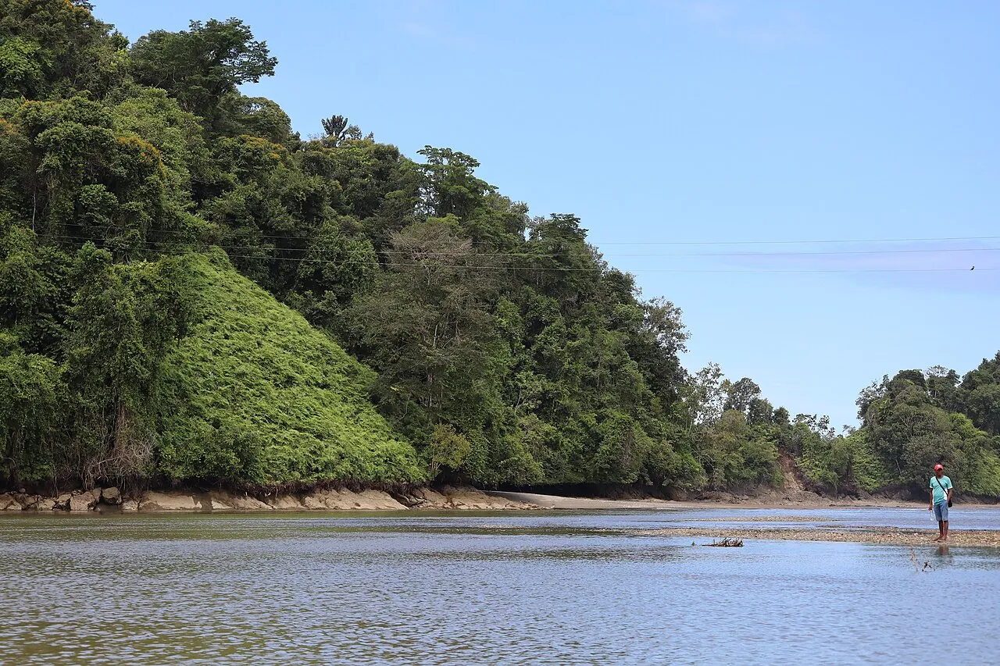

Nuquí
Chocó, Colombie · surf

Côte pacifique sauvage où la jungle tombe dans l’océan et les baleines à bosse passent de juillet à octobre.
- Lieu
- Chocó, Colombie
- Niveau
- Intermédiaire
- Activités
- surf
- Type d'eau
- Mer / océan
- Coordonnées
- 5.71, -77.27 (position approximative du secteur)
Dangers à connaître
- Secours éloignés.
- Pluies abondantes.
Le conseil d'Ocean Buddy
On n’y accède qu’en avion : voyage léger.
Ouvrir dans Ocean Buddy Télécharger sur l'App Store
Source : Fiche Ocean Buddy · septembre 2026 · à vérifier localement.